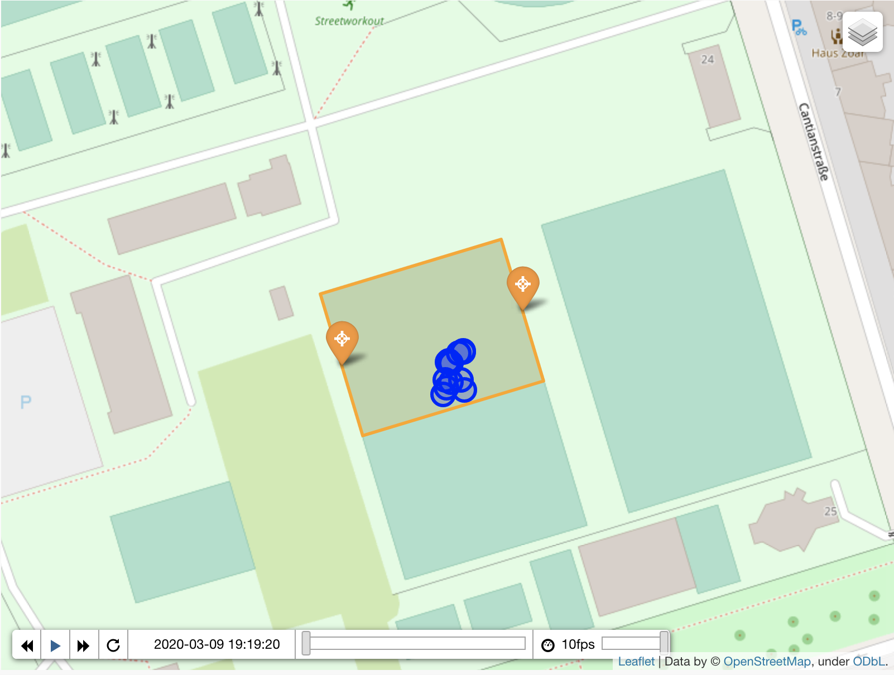

football_strava
Visualise your football games in GPX format


Code for the blog post https://guitton.co/posts/football-strava/ where I explain how I track my football games.
⚠️ Football has been interupted by Covid, so has my motivation for this project. Will pick it up later, feel free to contribute.

Installation
make install
Usage
football_strava --help
Development
make develop
make test
make serve-docs